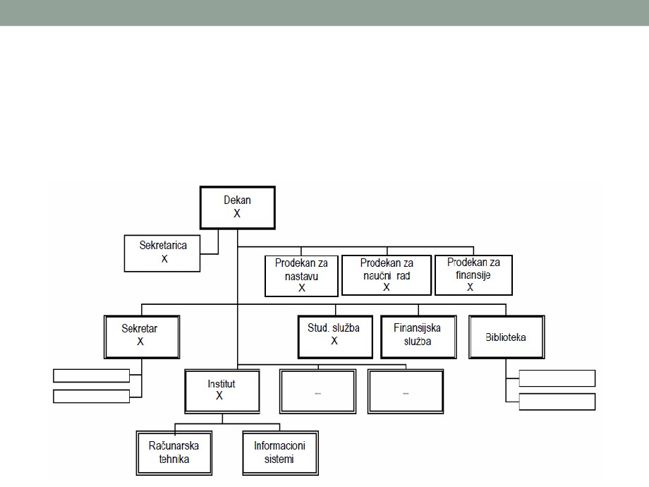

MODELOVANJE
FUNKCIJA I PROCESA
Uvod
• Logički procesi (koje sačinjavaju funkcije, događaji i
elementarni procesi) su akcije koje se obavljaju bez
obzira na način ugradnje i raspoložive resurse sistema.
• Stvarni problemi su preveliki i previše složeni da bi se
riješili odjednom, pa je potrebno njihovo strukturno
raščlanjivanje (razlaganje)
• Razlagati se mogu: funkcije i procesi, organizaciona struktura,
struktura podataka i struktura programske opreme
Uvod
•
Funkcije su skup logički povezanih trajnih poslovnih aktivnosti i zadataka
• Funkcije se obavljaju stalno (nemaju određeni početak i kraj).
• Funkcije obavljaju osobe, grupe radnika ili organizacione cjeline.
• Primjeri funkcija: Prodaja, proizvodnja, otprema, računovodstvo, ...
• Funkcija se može sastojati od desetina pa i stotina diskretnih procesa
•
Događaj je logički dio posla koji se obavlja kao nedjeljiva cjelina.
• Pokreće se diskretnim ulazom i završava nakon što proces odgovori odgovarajućim izlazom
• Događaj može se predstaviti jednim procesom kojim sistem reaguje na taj događaj
• Logički događaj dalje se razlaže do elementarnih procesa kojima se prikazuje reakcija sistema
na taj događaj.
•
Proces (elementarni, primitivni proces) je postupak, način rada, doslijedna
izmjena stanja, aktivnost ili zadatak kojim se obavlja neki posao.
• Proces se obavlja uvijek na isti način (za određeni ulaz se dobija isti izlaz).
• Trajanje procesa je konačno i odredivo (poznati: početak, završetak i ponavljanje)
•
Poslovna pravila su instrukcije i logika koji određuju proceduru obavljanja
procesa
• Ugrađuju se u računarski program (npr. preduslovi izlaska na ispit, broj polaganja ispita, uslovi
upisa, ...)
•
Poslovna politika je skup poslovnih pravila
• Osnova za donošenje odluka
Model
• Model je prikaz sistema kako u stvarnosti treba da
izgleda
• Model služi da bolje razumijemo rad sistema ili da postavimo
tehnički dizajn
• Logički model pokazuje šta je sistem i šta on radi.
• Opisuje sistem nezavisno od tehničke implementacije
• Fizički model pokazuje ne samo šta je sistem i šta on
radi, već i kako je sistem fizički i tehnički implementiran.
Modelovanje
• Modelovanje je projektovanje softverskih aplikacija i sistema
prije programiranja i povezivanja
• Trenutno i buduće stanje sistema se modeluje kako bi se identifikovali
zahtjevi, problemi i rizici i informacije koje nedostaju.
• Modelovanje podataka je najpopularnija tehnika za izražavanje
poslovnih zahtjeva za podacima koji će biti uskladišteni u bazu
podataka sistema.
• Modelovanje procesa je tehnika koja se dosta praktikuje za
izražavanje zahtjeva poslovnih procesa, tokova procesa, ulaza
i izlaza
• Modelovanje funkcija je tehnika dekompozicije funkcija u cilju
izrade opšteg modela funkcija
• Za postupak modelovanja razvijeni su odgovarajući CASE alati
Dekompozicija
• Dijagram dekompozicije: funkcije, procesi, spojnice i
vanjski spojevi.
• Funkcije se označavaju se (glagolskom) imenicom (npr. Prodaja,
Proizvodnja),
• Procesi se označavaju glagolskim izrazom oblika infinitiv+objekat
(ofarbati dio, osušiti dio),
• Spojnice su spojevi (veze) između funkcija i procesa,
• Vanjski spojevi su spojevi sa dijelovima dijagrama na drugim
stranicama
Dekompozicija
• Pravila:
• Selektivni procesi na dijagramima se označavaju znacima <>
• Sekvencijalni procesi se označavaju znacima [ ]
• Vrši se numeracija funkcija
• Funkcionalni dijagrami se ne bave podacima
• Ističu važnost i kompleksnost pojedinih poslova
• Identifikovanje sličnosti u dekompoziciji različitih poslovnih
funkcija
• Npr, za trgovinu koja se bavi prodajom masivne robe:
• Funkcija otpreme je ista u maloprodaji i veleprodaji
• Funkcija otprema se dizajnira i implementira umjesto 2 puta - samo
jedanput i ona treba da bude dostupna iz obje opcije (nad-funkcije)
aplikacije (veleprodaje i maloprodaje).
Modelovanje funkcije
NABAVKA
•
Izrada globalnog modela
• Evidentiranje dobavljača
funkcija počinje izradom
• Nabavka robe
hijerarhijske liste funkcija po
• Izrada narudžbi
pojedinim organizacionim
• Primanje robe
cjelinama.
UPRAVLJANJE OSOBLJEM
•
Izrada dijagrama
• Evidentiranje rada
dekompozicije:
• Prijem na posao
1. Korijen dijagrama, kome se
• Praćenje rada
• redovni rad
dodjeljuje ime sistema
• prekovremeni rad
2. Razrada u podsisteme i
• bolovanje
poslovne funkcije sve do nivoa
• godišnji odmori
operacionalizacije
• Otpuštanje iz službe
• Obračun plata
Modelovanje funkcije
• Pravila:
• svaki proces je roditelj ili dijete,
• roditelj mora imati barem dvoje djece,
• dijete smije imati samo jednog roditelja.
• Preporuke:
• Izostaviti procese koji samo premještaju ili preusmjeravaju podatke, a pri
tome ih ostavljaju nedirnute.
• Pažnju usmjeriti na procese koji nešto:
• računaju (npr. prosjek ocjena),
• donose ili potpomažu odluke (npr. određivanje raspoloživosti robe pri
naručivanju),
• filtriraju ili sumiraju podatke (npr. računi kojima je istekao rok plaćanja),
• organizuju podatke u korisne informacije (npr. generisanje izvještaja),
• pokreću druge procese (npr. mijenjaju modalitet rada uređaja) ili
• rukuju podacima (npr. stvaranje, čitanje, ažuriranje, brisanje i slično).

Dijagram organizacije
• Dijagram organizacije (shema, mapa, karta organizacije) daje prikaz
strukture organizacije hijerarhijom pravougaonika („kućica").
• Svaki pravougaonik predstavlja određenu ulogu ili odgovornost u organizaciji
Metode strukturiranog modelovanja
• Koriste se metode kao što su PMOV, IDEF familija,
Dijagram klasa,
• Postupak modelovanja je “vještina”, zavisi od
sposobnosti, znanja i iskustva
• Ne mogu se dati neka stroga pravila modelovanja koja bi,
bez obzira na to ko modelovanje vrši, vodila do
jedinstvenog modela složenog realnog sistema
• Mogu se dati samo opšte metodološke preporuke, opšti
metodološki pristupi, kao pomoć u ovom složenom poslu
Metodologija funkcionalnog modelovanja
IDEF0
• Za realizaciju programa integrisane kompjuterizacije
proizvodnje razrađena je familija metoda IDEF (Integrated
Definition Function Modeling), koja je definisana nizom
standarda (IDEF0, IDEF1, IDEF1x, IDEF3, IDEF4, IDEF5 i
IDEF9).
• Ova familija metoda se uspješno primjenjuje u najrazličitijim
oblastima i pokazala kao efikasno sredstvo za analizu,
projektovanje i modelovanje tehnoloških procesa
• Metodologija funkcionalnog modeliranja IDEF0 predstavlja
metodu za modelovanje tehnoloških procesa i funkcija.
• IDEF0 prikazuje tok podataka, kontrolu sistema i funkcionalni
tok životnog ciklusa
• IDEF0 može da grafički prikaže različite operacije sa različitim
detaljima
Metodologija funkcionalnog modelovanja
IDEF0
• Osnovni gradivni element IDEF0 je blok
• Četiri strane bloka imaju sledeće uloge:
• Lijeva - ulaz
• Desna - izlaz
• Gornja - upravljanje
• Donja - mehanizam
Karakteristike IDEF0 bloka
• Jednostavna sintaksa - riječ unutar bloka
• Blok - pravougaonik koji predstavlja funkciju, sadrži ime i broj
• Strelice - usmjerene linije, postoje 4 klase:
• Ulazi sa lijeve strane - ulaz (Input)
• Ulazi odozgo - kontrola (Control)
• Izlazi sa desne strane - izlaz (Output)
• Uzazi odozdo - mehanizam (Mechanism)
ICOM koncept
• Kontekst - okruženje u kojem funkcija ili skup funkcija radi
• Dekompozicija - razdvajanje funkcija na njene komponente
• Funkcija - aktivnost, proces ili transformacija modelovana
blokom, koja se identifikuje glagolom
• Spoj - mjesto gdje se strelica spaja sa drugim strelicama
• Čvor - blok iz kojeg potiče potomak
Metodologija funkcionalnog modelovanja
IDEF0
•
Pojašnjenje pojmova:
• ulaz (I = Input): nešto što se troši u procesu (nije obavezan),
• upravljanje (C = Control): ograničenje na izvršavanje procesa
(obavezno),
• izlaz (O = Output): rezultat procesa (obavezan),
• mehanizam (M = Mechanism): koristi se u procesu, ali se ne troši (nije
obavezan).
•
Uzajamno dejstvo između funkcija u IDEF0 se predstavlja
vezama koje odražavaju tok podataka ili materijala, koji sa
izlaza jedne funkcije dolaze na ulaz druge.
• U zavisnosti od toga sa koje strane bloka se nalazi, tok dobija naziv
„ulazni“, „izlazni“ ili „upravljački“.
•
U IDEF0 su realizovana tri osnovna principa modelovanja
procesa:
• princip funkcionalne dekompozicije,
• princip ograničenja složenosti i
• princip konteksta.
IDEF0
• Princip funkcionalne dekompozicije se sastoji u
predstavljanju složene poslovne funkcije skupom
elementarnih funkcija
• Princip ograničenja složenosti se sastoji u tome da broj
blokova na dijagramu mora biti od 2 do 6.
• Princip konteksta se sastoji u tome da modelovanje
poslovnog procesa počinje sa crtanjem kontekstnog
dijagrama koji podrazumijeva identifikaciju primarne
funkcije (na kontekstnom dijagramu se prikazuje samo
jedan blok koji predstavlja glavnu poslovnu funkciju
sistema koji se modeluje)
• Pri određivanju glavne poslovne funkcije, neophodno je imati u vidu
cilj modelovanja - jedan poslovni sistem se može opisati na razne
načine, u zavisnosti od toga sa kog stanovišta se posmatra.
Dokumentovanje tehnoloških procesa
IDEF3
• Metoda IDEF3 predstavlja standard za dokumentovanje
tehnoloških procesa, koji se odvijaju u poslovnim sistemima, i
predstavlja alat za vizuelno praćenje i modeliranje njihovih
scenarija.
• Pod scenarijom se podrazumjeva opis redoslijeda promjena
svojstava objekata, u okvirima razmatranog procesa (npr. opis
redoslijeda etapa obrade dijelova u radionici i promjena
njihovih svojstava nakon završetka svake etape).
• Izvršavanje svakog scenarija prati odgovarajući tok
dokumenata:
• tok dokumenata koji određuju strukturu i redoslijed procesa (npr.
tehnološke napomene, opis standarda) i
• tok dokumenata koji odražavaju hod njegovog izvršenja (npr. rezultati
testova, ekspertiza).
IDEF3
• Postoje dva tipa dijagrama u standardu IDEF3, koji
predstavljaju opise jednog istog scenarija tehnološkog procesa
iz različitih uglova posmatranja:
• Dijagrami opisa redosleda faza procesa (Process Flow Description
Diagrams - PFDD) - prikazuju veze među pojedinim akcijama nekog
scenarija
• Dijagrami stanja objekta i njegovi transformacioni procesi (Object State
Transition Network - OSTN) - opis dozvoljenih stanja i uslova
• Zajedno daju pregled niza aktivnosti koje opisuju neki proces
• Osnovni cilj IDEF3 je da obezbijedi struktuirani nači na koji
ekspert iz određenog domena može da prikaže znanje o
operacijama određenog sistema ili organizacije
• Motivi za razvoj IDEF3:
• Ubrzanje procesa modelovanja sistema
• Podrška upravljanju projektom
• Pružanje koncepta, sintakse i procedura za izgradnju zahtjeva sistema
• ...
IDEF3 - Model opisa procesa
• Prikazuje način ponašanja predloženog sistema
• 5 osnovnih gradivnih blokova za opisivanje sistema
• Dijagram opisa procesa:
1. Aktivnost - strelica
2. Logika - blokovi za spajanje
3 Ponašanje - blokovi
• Stanje i prelazi
4. Stanje objekta - krug
5. Prelaz stanja - strelice
IDEF3
• Organizaciona struktura - scenario
• Skup situacija i stanja koja opisuju određenu klasu problema
• Primjer
• Scenario: dio se doprema u radionicu za farbanje osnovnom
farbom. Ona se nanosi u jednom debelom sloju na veoma visokoj
temperaturi. Boja se suši u peći, nakon čega se vrši testiranje
kvaliteta farbanja. Ako se otkrije da nema dovoljno osnovne farbe,
taj dio se ponovo vraća na farbanje. Ako doi zadovolji inspekciju,
prosleđuje se dalje na obradu.
IDEF3 - Dijagrami opisa redosleda faza
• Simboli:
• Pravougaonici na dijagramu PFDD se zovu funkcionalni elementi ili
elementi ponašanja (Unit of Behavior (UOB)) - označavaju
aktivnosti, fazu procesa ili primljena rješenja.
• Svaki UOB se imenuje glagolskim izrazima oblika infinitiv + objekat i
jedinstvenim brojem.
• Na dijagramima za veze između funkcija se prikazuju strelicama, i
to:
• prethođenje (Precedence), prethodna aktivnost se mora završiti da bi
sledeća započela (crta se slijeva nadesno ili odozgo prema dole),
• tok objekata (Object Flow), izlaz prethodne je ulaz u slijedeću aktivnost,
• relacioni (Relational Link), povezivanje uz korisnički definisani uslov.
• Prelazi, veze (J - junction) su sledeće:
• & (logičko I) - svaka povezana aktivnost uvijek se obavlja/završava,
• X (ekskluzivno ILI) - obavlja se samo jedna od povezanih aktivnosti,
• O (ILI) - obavlja se jedna ili više povezanih aktivnosti.
IDEF3 - Dijagrami stanja objekta
• Isti primjer ali sa stanovišta objekta (ne posmatrača)
• Ključni elementi su stanje (krug) i promjena stanja
(strelice)